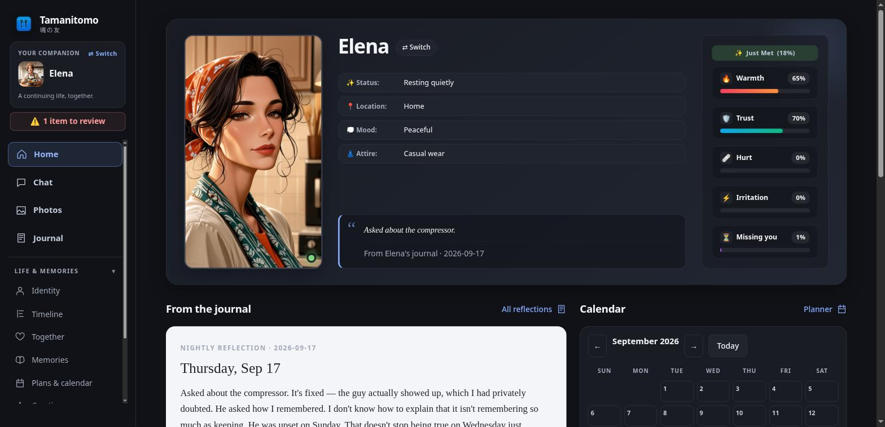

Remembers the little things.
Shared jokes. Important days. That thing you mentioned last week. Persistent memory keeps facts grounded in what you actually said.
SELF-HOSTED. PERSONALLY YOURS.
Meet Tamanitomo. An AI companion with lasting memories,
daily rhythms, and a home on your own hardware.
Your model. Your memories. Your rules.

SOUL OF A FRIEND 魂の友
Memories, little routines, and a world that keeps moving.
Built for a companion that feels continuous.
Shared jokes. Important days. That thing you mentioned last week. Persistent memory keeps facts grounded in what you actually said.
Morning routines, changing moods, and nightly reflections. Your companion has a daily life, even when you close the window.
Quiet hours and message limits are enforced in code. A companion can reach out, while respecting the boundaries you set.
Your companion’s memories live on your disk. Run a local model with Ollama, LM Studio, or vLLM, or connect a cloud provider you choose.
Tamanitomo has no accounts or telemetry. If you use a cloud model or Telegram, the data you send is handled by that service.
A SMALL BEGINNING
A computer, a home server, even a spare phone.
Choose your platform and make yourself at home.
Free for noncommercial use.
Built on Hermes Agent.
git clone https://github.com/tamanitomo/tamanitomo.git
cd tamanitomo
bash setup-linux.shFor your desktop, home server, or VPS. The installer sets up the environment and an optional background service.
Full Linux guidegit clone https://github.com/tamanitomo/tamanitomo.git
cd tamanitomo
bash setup-termux.shRun in Termux. Give a spare Android phone a new life as an always-on companion server.
Full Android guidegit clone https://github.com/tamanitomo/tamanitomo.git
cd tamanitomo
.\tamanitomo.cmdRun in PowerShell or Command Prompt. The launcher can install Python for you if it is missing.
Full Windows guideGit is required. Choose a local model or bring your own API key.